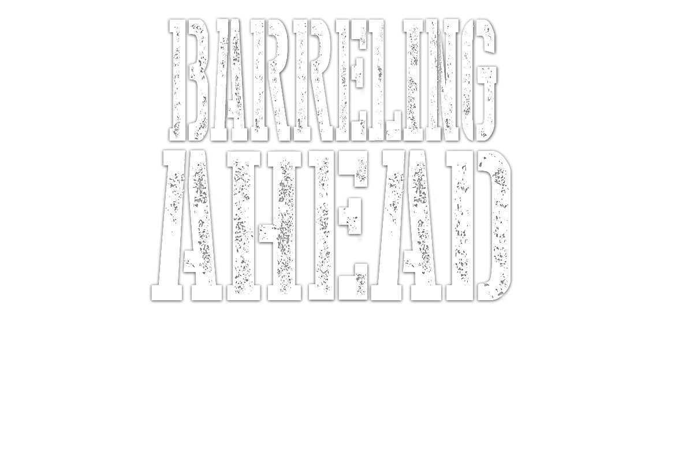
AMERICA IS DRUNK ON CRAFT BEER.
And as a result, any would-be brewer with an ounce of ambition and a bushel of hops can enter the industry for a typical week's salary. Five midwestern brewers at varying stages of their careers weigh in on the country's growing LIBATION INFATUATION
Beer drinkers aren’t likely to remember a time without pale ales, stouts, or porters but it’s been only 15 years since the small batch, full-flavored, and independently owned beers have returned to tap handles and supermarket shelves with a vengeance.
Unhappy corporate types have been fleeing their office jobs in droves to chase their beer crafting dreams. Some have become fabulously wealthy, a few have failed, and most have carved out a little niche for themselves by doing a few beers well. But with a new brewery opening in the United States every day, the competition is fierce. The small breweries of a decade ago are now the established beer suppliers and barriers to entry of today.
Nearly 30 years after craft brewing started in earnest, the industry is coming to a head. Can the eager upstarts survive in the face of seasoned veterans and corporate behemoths?
- THE CRAFTSMEN -

THE
VETERAN
Russ Klisch
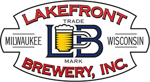
- OPENED: 1987
- LOCATIONS: 35 states
- BARRELS: 33,000/yr
- FLAGSHIP: Riverwest Stein
Russ Klisch and his brother, Jim, founded Lakefront Brewery in 1987 when the home-brew they call Riverwest Stein – named for the neighborhood they lived in at the time – was crafted well-enough to sell.
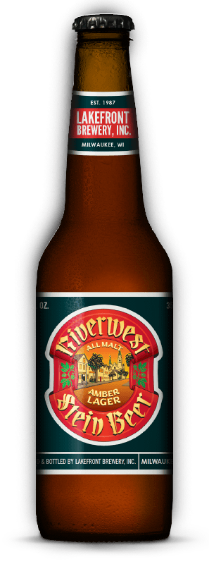
RIVERWEST STEIN
Rich with German heritage, brewed with a native lager yeast. Its amber hue reveals a malty sweetness with a traditional finish.
That year, they sold 11 barrels. They started in December, and they literally rolled some of the barrels from their bakery-turned-brewery on Chambers Street to Gordon Park Pub down the street.
“No one really had any money and there really wasn’t good equipment being made,” says Klisch, the co-owner and co-founder of Lakefront Brewery in Milwaukee, Wis. The lack of professional grade equipment meant that brewers weren’t making the best beer they could. It resulted in one of two things: beer with preservatives and additives, or beer that couldn’t travel far due to spoilage.
Traveling far was something Lakefront’s beer did not do at first. It took 10 years for Lakefront Brewery to achieve an annual output of 3,000 barrels. Today, Lakefront Brewery produces more than 33,000 barrels, available in 35 states, is delivered by trucks, and is bursting at the seams in the converted power plant they’re currently brewing in.
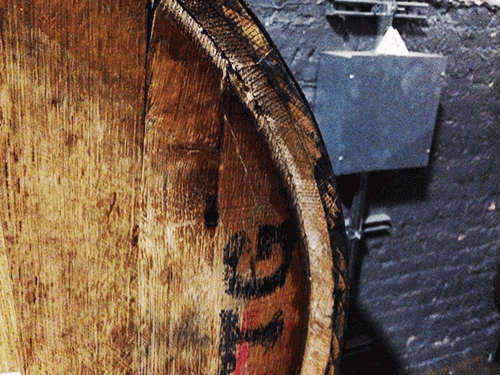
“Well, we’re barely keeping up,” Josh Barto, a brewery navigation specialist (aka, tour guide) at Lakefront Brewery, says with a laugh. “There’s no more room to shove any more tanks. We’re trying to get equipment that will make us more efficient, but just capacity-wise, we’re pretty maxed out at this location.” Lakefront is currently in the process of expanding. The brewery is currently considering a plot in the Menomonee Valley, about two miles from the current facility. Assuming the plans come to fruition, Lakefront Brewery will have the space to increase production by more than 200 percent.
“I feel we’re going to continue to grow,” Klisch says. “We’ll be over 100,000 to 200,000 barrels in production in the next 10 years.”
Production at those levels would put Lakefront within keg-rolling distance of being in the top 10 craft breweries in the country for barrel output. But how does a brewery even get to 100,000 or 200,000 barrels?
Keeping a finger on the pulse of flavors is a big part of Lakefront’s game, along with the brewery’s economic ace. “It’s pretty hard, when you get people’s palates educated, for them all of a sudden to say ‘well, I want bland,’” Klisch says.
Lakefront’s Organic ESB Ale is the oldest certified organic beer in the country. Their Wisconsinite is an all-Wisconsin sourced Weiss with the only native brewing yeast from Wisconsin. It was the first brewery to bottle fruit beer since prohibition in 1988 with their cherry lager. Lakefront also saw sales spike following the introduction of New Grist, the United States’ first certified gluten-free beer, and they are the rare craft brewery that specializes in lagers. Their Pumpkin Lager is the only commercially available pumpkin lager in the world – all other pumpkin beers are ales, meaning they were fermented at a higher temperature. What’s the next move? “It’s going to be a very flavorful, low-alcohol beer,” Klisch says. “Session style. Big flavor.”
"I don’t know what I would do if I sold," Klisch says. "I could sell right now and probably get a couple million, and I could take that million and what would I do with it?"
Sessionable beers are beers that drinkers can drink throughout the day. Part of the reason macro brews still sell so well is that they’re great for drinking during events – times when you want to drink more than two or three beers. Craft beers, on the other hand, can leave drinkers feeling weighed down, and their high-alcohol content can make a mess of daylong events. Making a sessionable beer on par with the best IPAs is a logical response to a consumer problem. You know, like most innovation. “One of the bigger valid complaints people who drink craft have is ‘I like it, but I can only drink two,’” Klisch says. “They really want to drink more, but they don’t want to have any more alcohol.”
Would-be brewers can definitely succeed and they’d be doing themselves a disservice if they had a new idea and didn’t at least try.
New brewers expectations have to be realistic, though. Immediate success isn’t guaranteed and they’re not likely to be the next craft beer billionaire. “You’re running a marathon, you’re not running a sprint,” Klisch says. “Unfortunately, what you have right now is so many people getting into [brewing] and they think ‘I’m going to be at 10,000 barrels in a couple years.’ It took us almost 20 years to get to 10,000 barrels.”
By Klisch’s estimation, the American market can handle somewhere around 10,000 breweries – over three-times the amount of breweries currently operating – assuming the model for craft brewers doesn’t change drastically. “I think that’s a reasonable possibility if those breweries look like some of the new entrants we’re seeing today,” says Bart Watson, PhD., a staff economist at the Brewers Association. “One of the things that’s amazing about the craft brewing industry is that people are always innovating both on beer and business models. So, five years from now, the entrants may look completely different from the entrants we’re seeing today, which makes forecasting a little bit more difficult when you’re thinking about how many total breweries there are going to be in a market.”
Klisch even has an open offer for young folks interested in starting their own breweries. It’s an incredible offer, albeit one that requires certain experience in bending the space-time continuum. “I’ll trade you my brewery for free if you give me your age,” Klisch says. “You can have my brewery, but I get to be 20-something-years-old again. Anybody want to take me up on it? If that could ever happen, I’d be more than happy because I could do it again if I got back into it.”
THE
GOLIATH
Jeff Koopmeiners
- OPENED: 1855
- LOCATIONS: 50 states
- BARRELS: 3+ million/yr
- FLAGSHIP: Blue Moon
Miller Lite revolutionized the brewing industry and is the staple of stadiums, tailgates and college parties nationwide. Its popularity is surpassed only by its consistency, even if the taste hasn’t helped the perception of American beers worldwide. Within the last decade, however, a young, growing group of drinkers are demanding high quality, handcrafted brews and forcing MillerCoors to follow demand, but can a corporate colossus genuinely exist in the craft beer market?
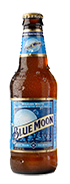
BLUE MOON
A Belgian style wheat ale, features a sweet smoothness that gives way to a citrus tingle. Traditionally served with an orange slice.
Craft beer is booming, but was still just 6.5 percent of the American beer market last year. The craft beer share grew 15 percent to get there, however, and the writing’s on the wall: craft beer isn’t just a trend. At the same time, mass-produced, domestic beer is declining – MillerCoors’ domestic sales have fallen by an average of 2.9 and 4.85 percent, respectively, in the previous two quarters – but it’s not going anywhere fast. MillerCoors, including their craft and import division, Tenth and Blake, owned 29 percent of the total American beer market in 2012. The big boys remain safely at the top of the industry.
MillerCoors opened Tenth and Blake in 2010. The division allows the international giant to sink their teeth into all those “fancy beer” dollars, producing brands like Blue Moon and busily acquiring regional brands like Leinenkugel’s. Tenth and Blake currently owns and manages 13 brands. “They have to get to a certain size before we buy it,” says Jeff Koopmeiners, manager of strategy and projects at Tenth and Blake.
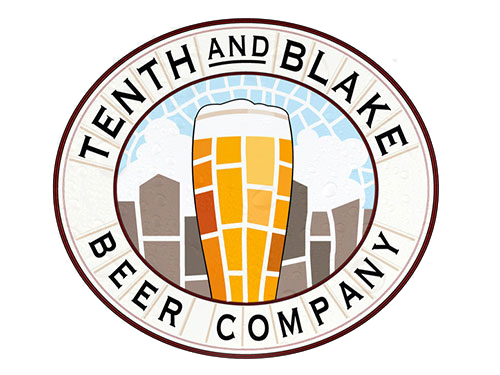
Tenth and Blake is the fastest growing division of MillerCoors, but is it still craft beer if MillerCoors is making it?
There isn’t a steadfast line that puts a brewery on Tenth and Blake’s acquisition radar, but once a craft brewer comes into the fold, the transition is often the most important part. “It’s important for us to keep leadership in place,” Koopmeiners says.
Empires have been built on the personalities of brewery founders. When Anheuser-Busch InBev purchased a local Chicago-based brewery, Goose Island, the beer didn’t change. The perception of the beer did. “I think people want to know where their beer’s coming from,” Brian Pawola, brewer and co-partner at Pollyanna Brewing Company a new Chicago brewery in the south suburbs, says. “I think it’s kind of similar to food where they don’t want to buy something that they think is gourmet and then realize it was made in a Wal-Mart kind of facility.”
Drinkers automatically assumed that once the brewery went under the control of AB InBev, the quality would be compromised. Under the AB InBev umbrella, Goose Island has gone on to sell more beer than it ever has. The vocal minority still believes the craft is gone, but nationwide distribution has launched the Goose Island brand to new levels. Keeping both the organizational structure and the face of the company is integral for the success of an acquisition. The advantage of being bought out, for the purchased brewery, comes from lowered packaging costs as well as reduced transportation and distribution costs.
“The craft beer brewers have done a good job creating the perception that what they’re doing is not a business,” Koopmeiners says. “The craft thing started as a fair way to describe what was going on. Now? Craft means nothing anymore.”
When a brewer gets to the size of MillerCoors, the argument is usually that the company loses its ability to innovate and respond with agility to market fluctuations. Pete Crowley, owner of Haymarket Pub & Brewery in Chicago, says “If I made enough so that everyone in this country that wanted it could get it, it loses its mystique, it loses its craft, its art,” he says. “Now it’s just a mass-produced thing.”
"If the three of us went to New Belgium and we didn't look at the labels on the bottles, you wouldn't be able to tell the differencebetween them and MillerCoors."
Craft beer itself is defined by the Brewers Association as small (annual production under six million barrels), independent (less than 25 percent of the brewery is owned by one of the brewing giants. Private equity and outside investment still count as craft), and traditional (the brewery’s flagship beer must be all-malt or “has at least 50 percent of its volume in either all-malt beer or in beers which use adjuncts to enhance rather than lighten flavor”). Small and regional brewers are more worried about that mass-produced product masquerading as something that’s handcrafted and from a small business. According to Jim McCabe, co-owner and president of Milwaukee Brewing Company, MillerCoors is “trying to fuzzy up the authenticity.”
“They’ve tried like crazy to [push craft down and keep the margins on the industrial beer and that’s just not working so they have to come into the craft segment,” McCabe says. “The yellow fizzy stuff is declining. It just is.”
"I had no idea beer could actually be...good." Pati Vitt, patron at World of Beer, Evanston, Ill.
It always comes down to the consumer though. Do drinkers looking for craft beer believe, or even care, whether what Tenth and Blake is doing is craft beer?
The bottom line is that Tenth and Blake beers sell, the brand’s quarterly growth has been in the double digits recently. Koopmeiners relates his craft line to a study the company did with the University of North Carolina about how people consume beer.
“Do you eat sushi? What’s the first piece of sushi you had?” he asked.
The answer for most people is, of course, a California Roll. To Tenth and Blake, the California roll represents what they call “invitation beers” in the craft beer world. Invitational beers include Blue Moon and Goose Island’s 312. These are often the first craft beers that people try, whether that’s due to their established popularity or their introductory-level flavor is open for debate.
The second tier is “exploration beer,” or full-flavored beers like IPAs and stouts. Many people happily settle in this sizeable, full-flavored tier.
Finally, the third – and least populated – tier, “experimentation beer.” As Koopmeiners refers to the group, “the people that’ll say ‘hell yeah, I’ll try chilies in my beer.’”
Drinkers may venture into the experimentation tier, but in Tenth and Blake’s experience, few ever stay.
“In the end, do you know what the number one selling sushi roll is?” Koopmeiners asks. “The California Roll.”
THE
LOCAVORE
Jim McCabe
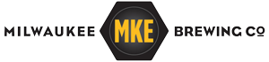
- OPENED: 1996
- LOCATIONS: 38 states
- BARRELS: 9,300/yr
- FLAGSHIP: Louie's Demise
Jim McCabe’s Milwaukee Ale House simultaneously looks brand new and like it’s been there forever. Half pub and half restaurant, the front of the Ale House houses a stage and a lengthy bar, behind which are 10 beer taps holding the carbonated goodness that built McCabe’s business. The back is filled with tables and wooden booths with a great view of the Milwaukee River.
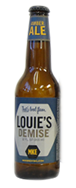
LOUIE'S DEMISE
Amber ale brewed w/ a blend of specialty malts & hops. Named for man who died in a barfight over a woman.
McCabe opened his brewpub in 1996 on the back of his flagship brand, a smooth amber ale named Louie’s Demise, and built the Milwaukee Brewing Company brand over the next decade. The cornerstone of McCabe’s success as a brewer? “The pub was a way to get a market established and start turning Milwaukee on to full-flavored beer and what we were doing,” says McCabe, the founder and president of Milwaukee Brewing Company.
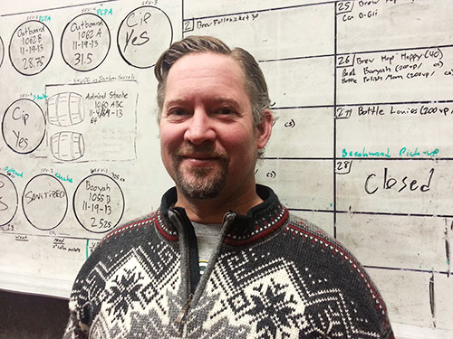
Jim McCabe sold his beer in just one building at first. Now his brewery is ready to expand into four new states in 2014.
While most craft brewers start by trying to market their beer to vendors, McCabe started with a plan that would put him in direct contact with his consumers from day one: a pub/restaurant hybrid. Brewpubs are inherently advantageous to brewers. The customer can provide direct feedback on the beer, and that interaction creates a bond that ties a brewer to the community in a way that a six-pack on a shelf never could. For aspiring brewers, McCabe says he’d start the same way he did in 1996. He adds, however, that newcomers should know they’re running a restaurant too. Only get into it “if you’ve got the stomach for the retail side,” he says.
It’s solid advice. Brewpubs are historically successful, especially when compared to the restaurant business at large. “We’ve been tracking brewpubs since the early 1980s,” says Bart Watson, PhD., staff economist for the Brewers Association. “About 50 percent of brewpubs that have ever opened are still open.”
Compare that to the restaurant industry where three-in-five new restaurants fail within the first three years. According to Watson, that differentiation from both restaurants and packaging breweries is what makes them successful in the long term. Craft breweries have been faring even better in recent years. In 2012, there were 409 brewery openings and only 43 closings, a net result of 366 breweries. “Good thing it was a leap year,” Watson says in his blog post from September 2013.
The difference in brewpubs and breweries, of course, is the economic investment required to start a packaging line. McCabe defends the notion that opening a brewpub is a better business plan than opening a brewery right off the bat. “I don’t think leveraging millions of dollars of investors’ money to spray beer around and hope that it sticks, I mean, it could work, but it’s a much riskier prospect than doing a brewpub,” McCabe says.
Eventually, Milwaukee Brewing Company’s popularity grew to justify opening a packaging brewery and in 2007, began selling their lineup in Milwaukee and throughout Wisconsin.
"These aren’t fake industrial flavors," McCabe says. "These are real, organic flavorsthat are great."
After seven years of brand building – including moving into the ultra-competitive Chicago market –Milwaukee Brewing Company is expanding their reach. The brewery plans to distribute to Indiana, Illinois, Iowa and Minnesota. “We don’t have aspirations of getting to Lagunitas’ size or anything like that,” McCabe says. “We’ll only let our beer go a relatively small distance from the brewery to keep it fresh and be able to keep the message on track.”
McCabe’s message doubles as his differentiation from the pack: using bold flavors and unique ingredients to intrigue drinkers. McCabe took his flagship amber ale, Louie’s Demise, and started brewing it with a number of Rishi teas including their Blueberry Rooibos tea. The result was Weekend @ Louie’s, a refreshing beer that has a full-beer flavor but won’t weigh you down on a hot summer day. This winter, Milwaukee Brewing Company is planning a can-only release called Hop Freak, a double IPA infused with Rishi’s jasmine tea. The new beer is a result of brewpub experimentation. Last year at the Milwaukee Ale House, they offered a new IPA every month, and Hop Freak is a combination of three ideas from that experiment. “It’s the creativity in flavor and just going for a true artisan product where we are boldly jumping into flavor opportunities without being cheesy,” McCabe says. “We’ve got an amazing crew of brewers that complement each other very well in the creative realms.”
Breweries, like most businesses, are only as good as their people and McCabe believes in his team. McCabe and fellow investors currently own the brewery, but like many craft breweries reaching maturity, a succession plan is in McCabe’s sights. Breweries like New Belgium Brewing in Fort Collins, Colo., have become models for the rest of the industry. In December 2012, the brewery implemented an Employee Stock Ownership Program (ESOP) and made the brewery 100 percent employee owned. Watson, noting the independent streak in the industry, says that breweries around the country are privately planning succession events to keep their companies freestanding. “New Belgium is already employee owned,” Watson says. “So I think we’re going to see breweries doing things like that.”
“I love the New Belgium plan,” McCabe says. “We’d have an ESOP program and we’d fire the ownership through the ESOP program and make all these guys who are building this company, make them the owners.”
It’s a future that’s increasingly likely given the amount of time the pioneers in craft beer have put in. Combined with the high point in the industry, it might be the perfect time for some to cash out without selling to a giant company.
THE
UPSTART
Josh Gilbert
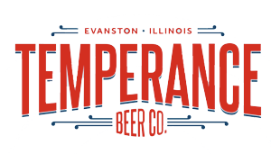
- OPENED: 2013
- LOCATIONS: 1 state
- BARRELS: Approx. 1,800/yr
- FLAGSHIP: Restless Years
The combined smell of disinfectant and sugared malt hang in the air. At the kettles, the brewers test samples of the grain heavy mash and its run off, sugar water, signaling that the boiling process is ready to begin. The shiny silver complexion of the fermentation kegs dominates the view, as they go through the last steps of sterilization ready to receive the boiled wort, unfermented malt, destined to become Temperance Beer Company’s new IPA, Gatecrasher.
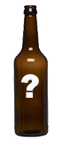
RESTLESS YEARS
Tropical hop aromas reveal a dry spicy finish, not too bitter, a balanced ale with a hop forward profile.
“One of the things I love about beer versus wine is there's such a breadth of styles and some things that you could put right next to each other and say, really, these are both beer?” says Josh Gilbert, founder and owner of Temperance Beer in Evanston, Ill. “When you have that first sip of beer like, ohhh man, I needed that. It’s, you know, basically putting the smile on people’s faces, making their life a little bit better, hopefully.”
Gilbert decided to put his passion for brewing into action after the housing market crash of 2008 threatened the viability of his two-person architecture practice. But beginning construction on Temperance in 2012 threw him into a different kind of glut: his was one of 409 craft breweries that opened across the nation last year.
“If you enter the market with 2,500-plus other great craft brewers around and you’re not differentiating yourself, if you’re not producing great craft beer, you’re going to get slammed by market realities,” says Bart Watson, PhD, staff economist at the Brewers Association, who has watched the number of craft breweries rise from less than 50 in the 1980s to 2,347 in 2012.
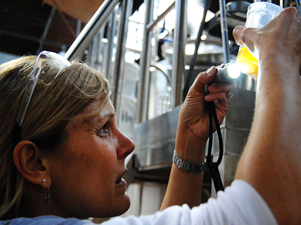
A brewer at Temperance inspects the run-off from the mash.
Gilbert, however, has optimism in his ability to differentiate his product and expand by using his unique position as the first brewery in Evanston, the historical home base of the Woman’s Christian Temperance Union and namesake of the brewery. “I had the idea for the brewery before Chicago proper sort of blew up with breweries opening, but now it’s nice to be sort of in the same market, but not in the same city as the majority of breweries in the area,” Gilbert says. “It’s something that makes us a little bit different, a little bit off the beaten path. In Chicago, we would’ve just been another brewery.”
But for Gilbert to succeed he needs to gain access to taps at local restaurants and bars, as well as limited shelf space in stores. Without popularity and people willing to buy the product, Jeff Koopmeiners, manager of strategy and projects at Tenth and Blake, MillerCoors craft division, says a small, unknown brewery’s beer will just collect dust on the shelves. “I’m not going to offer the little brewery that just opened in Evanston,” says Koopmeiners, putting himself in the shoes of a liquor store owner. “Craft beer is going to grow, but it’s going to be the large, regional breweries that do well.”
“Temperance is on thin ice just because they’re new,” agrees Zach Smith, aspiring Master Cicerone, a certified beer expert, and product manager at World of Beer in Evanston, Ill., where the bar is lined with taps that offer all varieties of craft beer. Even with 50 beers on tap, he says he can’t even come close to the number of brands available in Chicago alone.
Gilbert has his beer on tap at a couple of restaurants in Evanston and remains positive about his chances of getting more. “To stand out now, you have to have great beer, of course, but there needs to be a story,” he says. “This is what Big Beer doesn’t have, which is why they have to make expensive commercials. Being Evanston’s only brewery certainly helps us get on tap in our hometown. Beyond that, we are going out to potential accounts telling our story and sharing our beer.”
"There has to be a story," Gilbert says. "This is what Big Beer doesn’t have, which is why they have to make expensive commercials."
To create good beer, Gilbert approaches brewing the same way he approached architectural drawing, as an art, stretching innovation with styles and flavors from blueberry wheat ale to his chicory and licorice porter. “What we’re going for is basically eclectic,” Gilbert says. “All of our beers together, there isn’t a common theme in terms of style. We don’t want to fit into a category. Each one is designed to be fresh and exciting.”
That might be what helps Temperance succeed. Josh Barto, a homebewer and brewery navigations specialist at Lakefront Brewery in Milwaukee, Wis., says that just one good beer can’t carry a company. “I think that’s what a lot of micro and craft breweries, those really small guys who are like ‘we make a fantastic red ale, this has got to make us big,’” he says. “And they focus so much, on that they don’t have enough time to really focus and perfect the other beers.” Temperance has developed five recipes within the first year of business; the beers have only been on the market since September.
As Gilbert prepares for the opening of his taproom, he remains optimistic about his survival in the industry and his ability to grow. His dreams include a future urban beer garden in the parking lot where he has already planted a tree in anticipation. “I really only had my sights set on becoming a regional brewery, not what’s beyond that,” he says. “We’re not trying to take over the world or anything, but we would like to be able to make enough beer that the people who want to drink it will be able to get it and it won’t be something that’s only available in a few places.”
And staying local may make it easier to differentiate, especially in a small market like Evanston. “Micros that work within their local markets and connect with consumers more directly still are going to have a lot of opportunities to succeed,” Watson says. “In local markets, small brewers are still having opportunities to get on shelves, to get on tap handles.”
Gilbert sees himself maintaining a community feel with his customers and inspiring in them a love of his beer. “Maybe those breweries whose beer hasn’t instilled a passion in the public might disappear,” Gilbert says. “But predicting the future – even by economists – has been notoriously unreliable. So, I’m just going to enjoy the ride.”
THE
GRADUATE
Brian Pawola
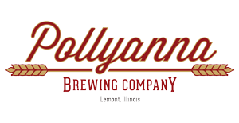
- OPENING: Spring 2014
- LOCATIONS: 1 state
- BARRELS: Approx. 1,000/yr
- FLAGSHIP: The Full Lemonty
Brian Pawola’s decision to enter the Chicago beer market may seem to be a risky proposition at a time when, due to the rash of craft beer brewers in recent years, the novelty of it all may be wearing off. However, if you ask the 27-year-old Naperville native whether he’s worried about the state of the industry, he doesn’t seem all that concerned.
THE FULL LEMONTY
A golden ale that's crisp and light. A balance between the malts, fruity hops and clean, American yeast.
“First of all, I don't think Chicago is saturated,” Pawola says. I think Chicago has a lot of room for growth. I think that we can differentiate ourselves because we're going to have a big enough system and the capabilities to immediately expand.”

Pawola at contract brewery Big Chicago Brewing Company in Zion, Ill., where he has been honing his skills for the past six months.
Pawola’s Pollyanna Brewing Company, based out of the Chicago suburb of Lemont, tentatively plans to open its doors this spring. His brewing space is big enough to house enough fermentation tanks to produce as many as 15 barrels per brew. To put that in perspective, Milwaukee-based industry titan Lakefront Brewery, which now produces upwards of 33,000 barrels per year, only brewed 59 during its first year in 1987, according to one of its tour guides, Josh Barto. Pawola says that if demand increases beyond the need for 15-barrel batches, he could “immediately double it.”
His decision to attend brewing school resulted from five years in an industry he hated, as he temporarily ceded his love for beer for a lucrative career in IT, analyzing hospitals’ electronic medical records.
“Financially, my decision to go into brewing would be considered stupid by a lot of people,” Pawola says. “IT is a pretty lucrative business. But, when people would ask me what I wanted to do in five years, all I could really say was, ‘not this,’ and eventually it was just a decision about being truly happy with my career. Brewing was my passion and I had the confidence that I could be successful in it.
Pawola attended - and recently graduated from – the Chicago-based Siebel Institute of Technology, America’s oldest brewing school. He enrolled in its Master Brewer Program, an 20-week course that, after six weeks classroom learning, flies its students to its overseas campus in Munich, Germany, where they see a variety of brewing systems and receive hands-on experience in both traditional and more modern forms of brewing technology. This sort of tutelage doesn't come cheap - it'll set you back nearly $26,000 - but Pawola points out that one of the primary benefits is that Siebel teaches students more than just the intricacies of making a great beer in a production-sized brewery.
"No one wants to hire a home brewer to be their head brewer,"Pawola says. "I wouldn't want to be a head brewer for a brewery if I didn't go to school."
“It's about consistency, that's something that Siebel taught me,” Pawola says. Especially with their focus on yeast and yeast handling, and how to keep the beers from one batch to another consistent. I think that for someone without an education, that would be really hard to pickup.”
So, it appears Pollyanna has the necessary equipment to succeed, at least initially. But so far, that’s about all it has. Its Facebook (320 likes) and Twitter following (162 followers) are modest at best, and Pawola only recently began utilizing his domain name, (pollyannabrewery.com) to discuss the status of the brewery, although he’s been blogging about the basics of opening a brewery and his journey through craft beer school for quite some time.
However, more than a few people share Pawola’s passion. According to the Brewers’ Association 2012 Industry Review, there were 1,254 breweries in planning last year, more than double the amount from 2010. Consider the fact that the number of craft brewery openings jumped from 1,758 to 2,347 over that same period, and it’s no surprise that it’s become more daunting to break into the market.
"I think we're definitely going to see barriers to entry growing like craft breweries have grown in the past," says Dr. Bart Watson, the Association’s staff economist. "If the goal of new breweries opening up is to be Sierra Nevada, that's going to be very, very difficult. You're not going to be Sam Adams’ Jim Koch. You're not going to be a billionaire.”
 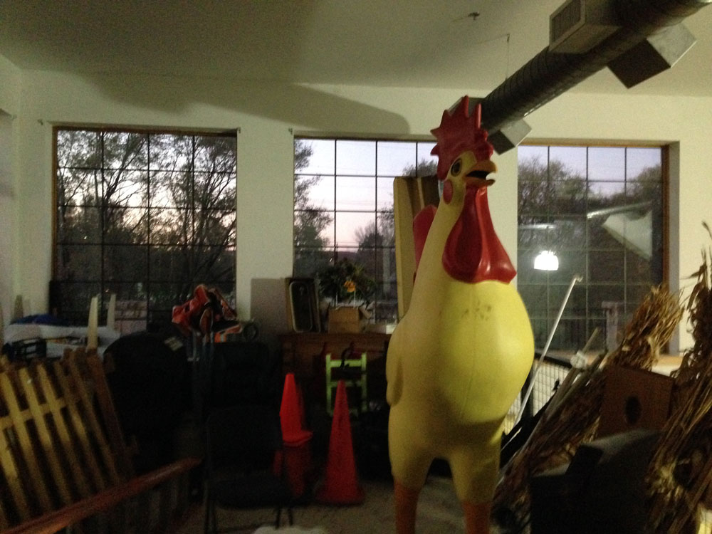
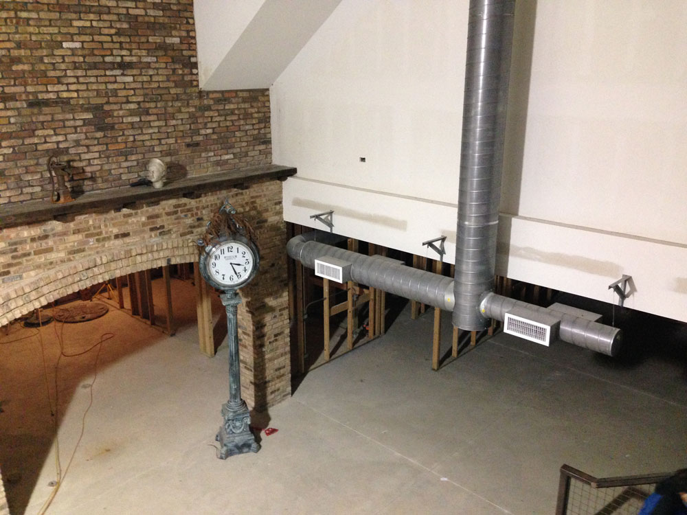
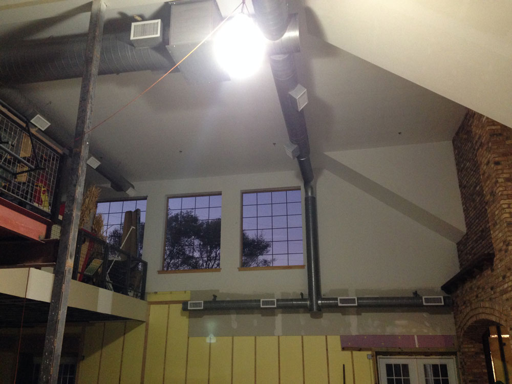
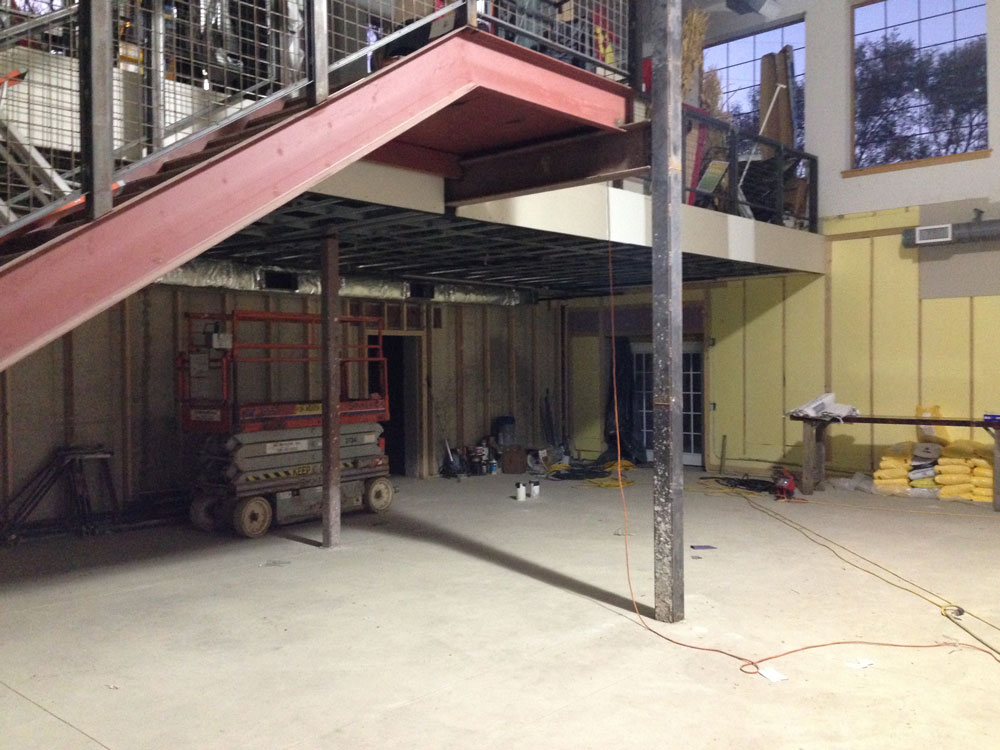
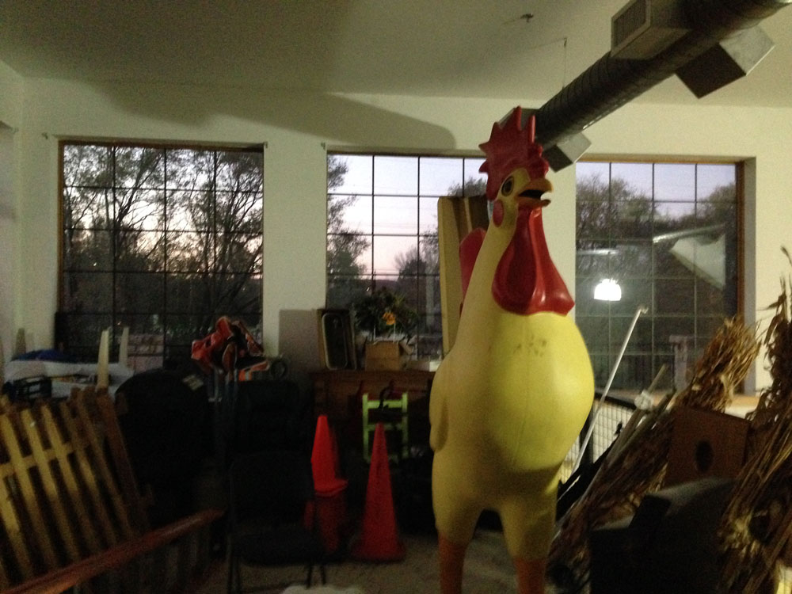
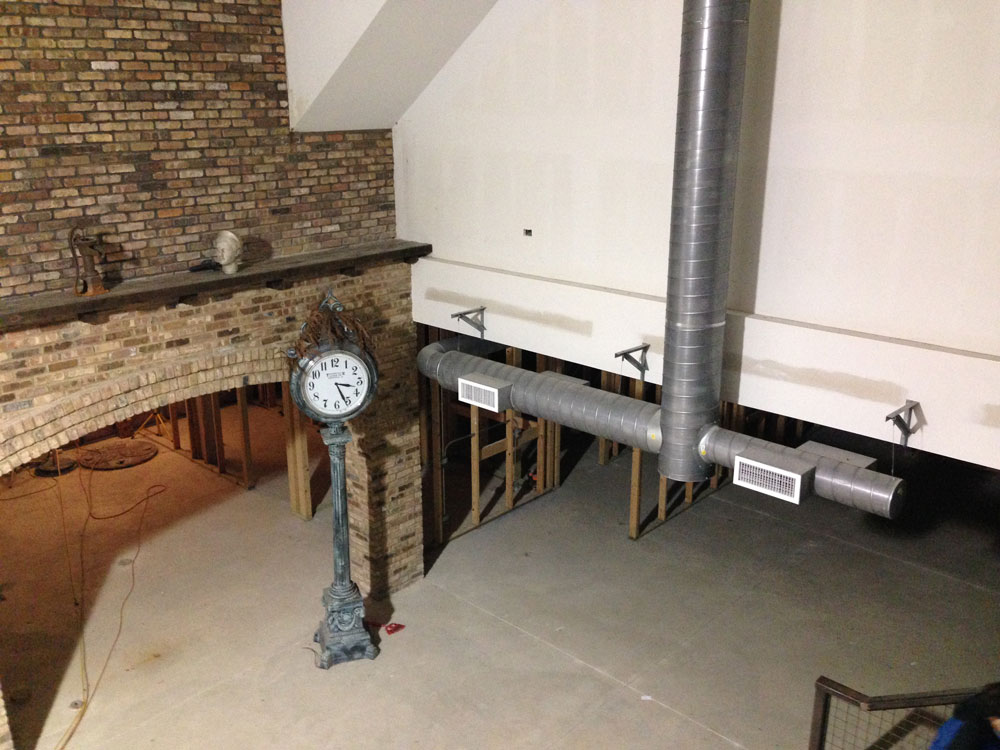
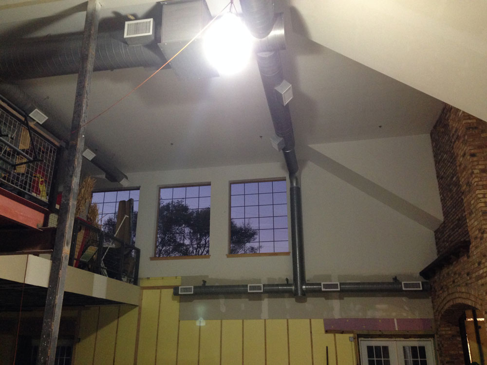
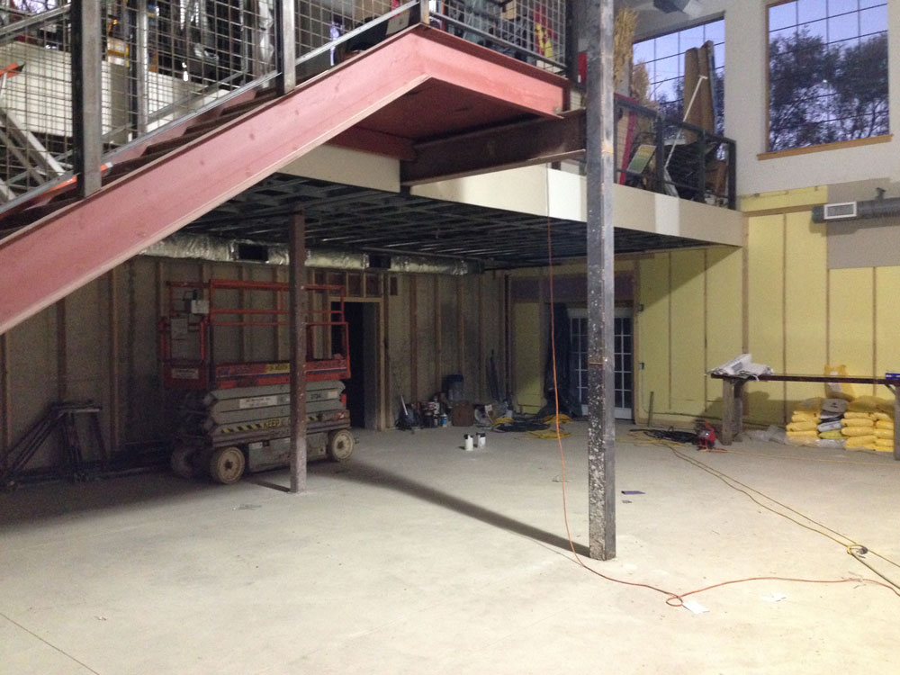

If Pawola wants to succeed, he’ll need to differentiate, and that means challenging consumers’ palates.
“We're going to be experimental but reliable,” he says. “The beers will be flavorful and balanced, but we're going to have some funky stuff out there - something for everyone. But not for the faint of heart.”
For instance, he plans to offer five main brews – a golden ale, a pale ale, a black IPA, a porter and a rotating IPA which he’ll switch out every couple months. The first two are intended for easy drinking, but the black IPA blends five American and German hops to give it a “bold, citrusy and spicy bitterness,” he says. In addition, there’s also a barrel-aging system set in place, and a dual heat exchanger to help him brew a proper lager. He also plans to utilize Lactobacillus, a type of bacteria that convers sugars into lactic acid, to add sourness to his spring and summer offerings.
"Consumers' tastes are changing, as is their knowledge of beer - they know what a good beer is nowadays," he says. "Five years ago, if you gave someone a craft beer they'd probably like it just because it was a 'craft beer.' But now, they can tell what they like and what they don't like. I think as consumers' tastes change there's going to be more competition, but I think in the end it'll be for the best."